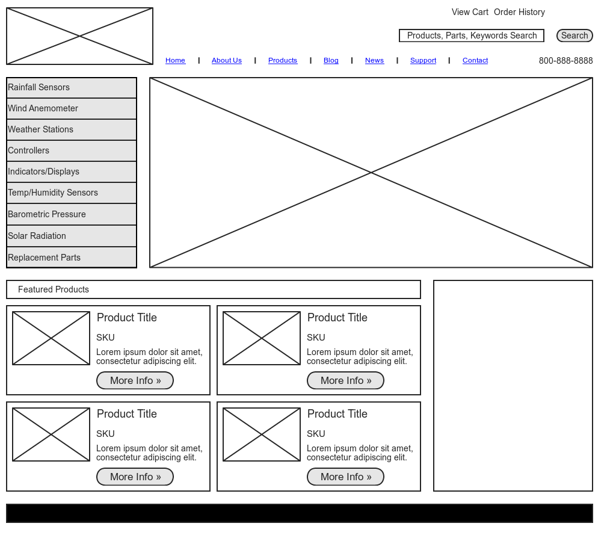
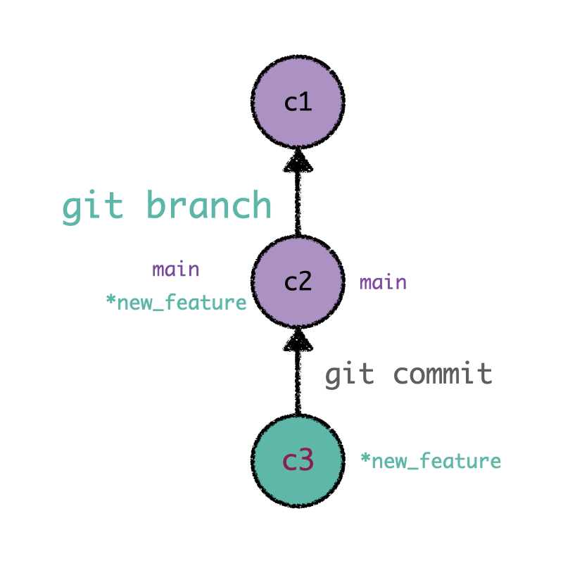

Purpose of README file
README files to communicate important information about a project for users and developers.
A README is often the first item a visitor will see when visiting your repository.
From the readme, users can easily understand what your project is about, how to use it.
README files typically include information on:
- What the project does a Project description
- How users can get started with the project Installation instructions
- Usage guidelines
- Contributing guidelines
- License information
Read more

Purpose of a wireframe
Wireframe graphic representation of a website, mobile app, or other digital interface that highlights the overall structure and layout of the design without going into specifics like colors, fonts, or images. A wireframe is a product outline that shows what interface elements will be present on important pages.
Wireframes are used to:
- Structural Planning
- User Flow
- Communication
Read more

Branch in Git
In Git, a branch is like a separate workspace where you can make changes and try new ideas without affecting the main project. Think of it as a "parallel universe" for your code.
Common Reasons to Create a Branch:
- Developing a new feature
- Fixing a bug
- Experimenting with ideas
Read more